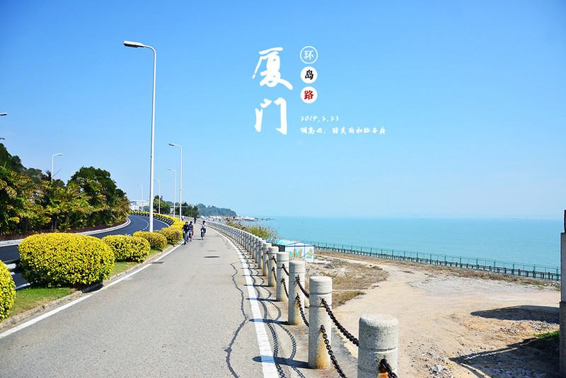

厦门八大必游景点
Top 1 鼓浪屿
亮点：代表厦门的文艺小清新岛屿
鼓浪屿景点
鼓浪屿最热门的五大景点包括日光岩、菽庄花园、皓月园、风琴博物馆、国际刻字馆。这五大景点设有通票，价格在100元左右，比单买各景点门票便宜。
上岛交通游客前往鼓浪屿的乘船码头已变更为厦鼓码头，本市居民仍可从原轮渡码头上岛。轮渡上岛单程约8分钟。
Top 2 厦门大学
亮点：中国最美高校之一
厦门大学
厦大内的热门景点分为建筑、自然及博物馆三类。其中芙蓉隧道人气最旺，长1公里的隧道两侧由学生画满了创意涂鸦，承载着青春的记忆。校园中的建南大礼堂与颂恩楼最为气派，适合合影留念。芙蓉湖与情人谷的自然景致最好。如果游客想要参观博物馆，还可以去校园中的鲁迅博物馆和人类博物馆看看
校园开放时间厦大在周一至周五限制参观时间及参观人数，周末全天开放没有限制。周一至周五的开放时间为中午12:00-14:00（限流1000人），晚间17:00-24:00（不限流）。有计划在工作日中午前往的游客最好早去排队，凭身份证即可进入。
Top 3 曾厝垵
亮点：适合“成群结队来吃喝”
曾厝垵
这里早晚都是人流攒动，光是品尝路边的特色美食就够吃个饱。白天逛手信店，吃甜品，拍小清新照片。入夜后找家小资咖啡厅歇一歇，或是去酒吧消遣夏夜都是不错的选择。
人气小吃店闽宗闽台肠粉(仅有一家，无分店) 珍珍姜母鸭海鲜(曾厝垵22年老店) 五兰沙茶面 Hollys Coffee 三年二班海鲜小炒店 黄则和花生汤店 八婆婆烧仙草
Top 4 南普陀寺
亮点：厦门香火最旺的佛教寺院

南普陀寺坐落于厦门大学旁，一墙之隔塑成两种截然不同的意境。六百余年的建寺史让这里成为了厦门香火最旺的佛教寺院，也是全国的寺庙中口碑最好的。寺院免费进入，每位游客可免费领一根香参拜。
上岛交通南普陀最著名的要数这里的素饼及素斋。素饼分为甜、咸两重口味，是不错的伴手礼。寺院还设有素斋餐厅，是南普陀寺的一大招牌。
Top 5 中山路步行街
亮点：骑楼建筑组成的老牌商业街
中山路步行街
中山路步行街是厦门最繁华的商业街，也是厦门的商业中心。保存较为完善的近代骑楼建筑让中山路别具一格。哪怕是绵绵阴雨，也丝毫不妨碍享受购物的乐趣。
中山路精华美食店黄则和花生汤店 1980烧肉粽 月华沙茶面 八婆婆烧仙草 天河西门土笋冻 莲欢海蛎煎 阿卿春卷
Top 6 环岛路
亮点：一条串联起众多景点的沿海公路

环岛路环岛路位于厦门西南部沿海，紧邻厦门大学与鼓浪屿。最精彩的一段位于环海南路，长7公里，骑行约30分钟。该路段西起演武大桥观景台，东至黄厝沙滩。一路上几乎全程靠海，游客大可走走停停，边欣赏海景，边体验海滨骑行的惬意之感。
环海南路景点一览演武大桥观景台（可与厦门双子塔合影） 白城沙滩 环海木栈道（热门景点，栈道建于海上） 胡里山炮台 厦门书法广场 白石炮台遗址 黄厝沙滩
Top 7 芙蓉隧道
亮点：中国最文艺的涂鸦隧道
芙蓉隧道
芙蓉隧道位于厦门大学内，是厦门大学最有特色的景点。一批又一批的厦大学子在隧道的墙壁上留下了他们的绘画作品。这些画面记录着一个个青春的故事与片段，凸显着青春的创造力，也是对青春的铭记
Top 8 厦大白城沙滩
亮点：距离厦大最近的亲海好去处
厦大白城沙滩
白城沙滩与厦门大学仅相隔一条马路，是大部分来厦大的游客都会造访的亲海沙滩。沙滩的面积广阔，虽然水质不及观音山的干净，但却是市区附近的赏海热门地。站在这里还可以一眼望到厦门双子塔，是合影留念的不二之选。